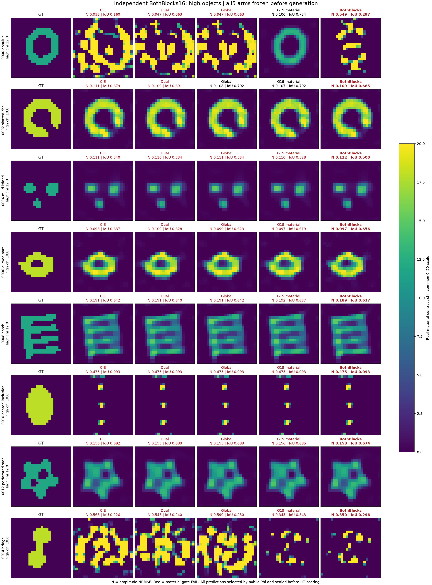
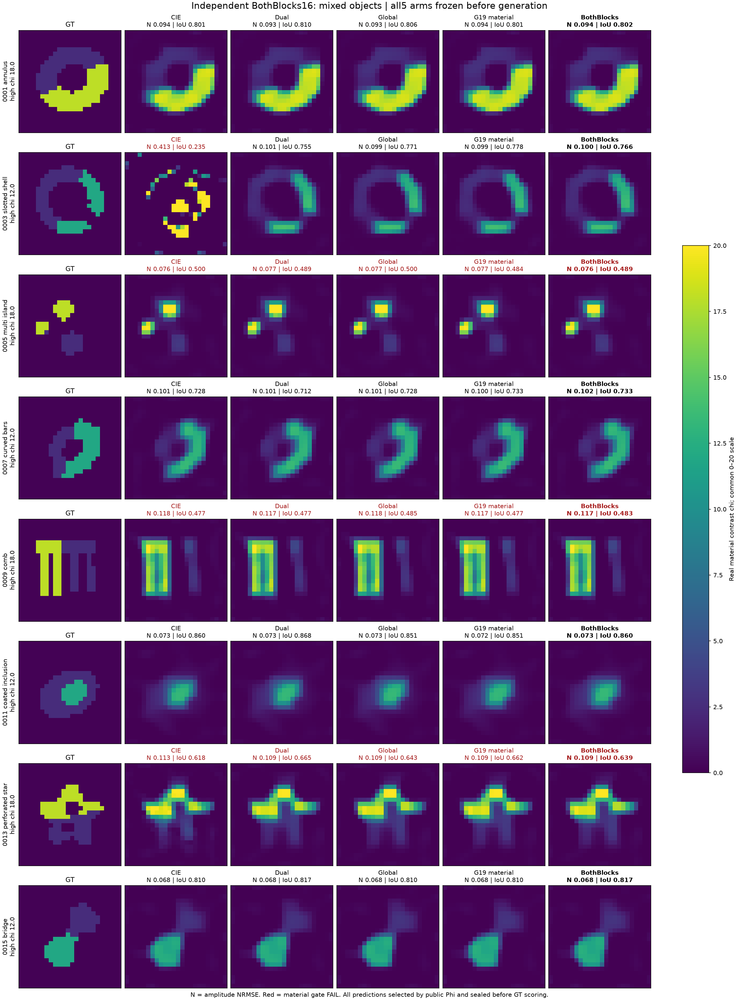
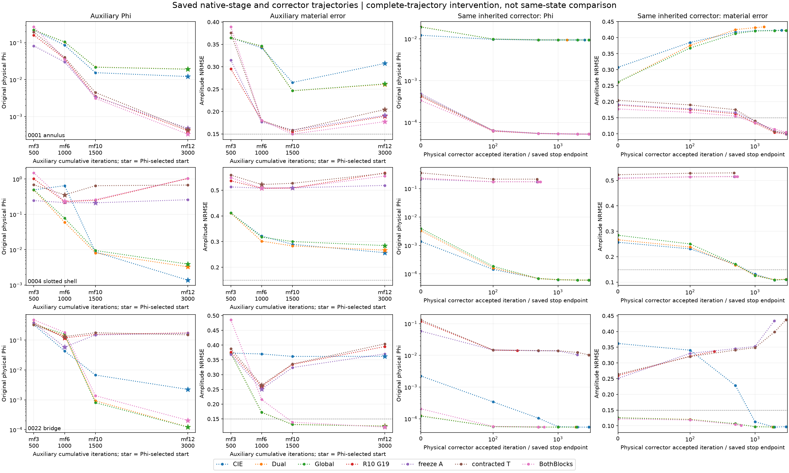

MAX-STRUCT / R11
Green分母改变了什么，
又该在哪个更新块修复？
研究执行中 · 16对象确认完成，48对象与三维继续
从完整导数纠正错误解释，再让新分母进入真实电流更新。保留环的正例，也保留开缝壳的失败；扩大独立高对比、混合材料与真正三维实验。
独立确认推翻了开发集的乐观解释
16个新材料、80次反演全部完成并在封存后评分。CIE / Dual-CIE / 原Green材料分母 / 两块Green的材料成功分别为4 / 5 / 7 / 5。两块修正毁掉了一个原Green能恢复的新环，因此不升级为默认算法。
原Green仍有材料恢复增量，但实际CPU约CIE的1.27倍；两块修正更贵，付费组合也没有增加成功数。48对象和真正三维的既定实验继续，不因这条修正的负结果提前结束。
完整16对象结果、全部失败与成本

全部high对象；GT仅在全部80预测和公开选择封存后评分。
全部mixed对象；统一0–20contrast色标，保留细结构共同失败。正在执行的独立扩大
上表是已冻结并提交执行的任务规模，不是完成数。48对象新GT尚未评分（独立16组已完成）；三维12³、三分量dyadic、60外部偶极照明，cross18→12的两观测不增加独立材料数。CPU、wall和物理LU分别记账；数据拟合不代替材料恢复。
路径在物理校正之前已经分开

桥在辅助stage2/3已经改善；同一个corrector随后延续不同的材料路径。不同硬件的DEV CPU没有混成算法加速证据。